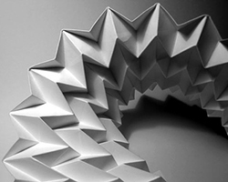

History of paper
Paper is a thin nonwoven material traditionally made from a combination of milled plant and textile fibres. It is primarily used for writing, artwork, and packaging; it is commonly white. The first papermaking process was documented in China during the Eastern Han period traditionally attributed to the court official Cai Lun. During the 8th century, Chinese papermaking spread to the Islamic world, where pulp mills and paper mills were used for papermaking and money making. By the 11th century, papermaking was brought to Europe. By the 13th century, papermaking was refined with paper mills utilizing waterwheels in Spain. Later European improvements to the papermaking process came in the 19th century with the invention of wood-based papers. Although precursors such as papyrus and amate existed in the Mediterranean world and pre-Columbian Americas, respectively,these materials are not defined as true paper.
Nor is true parchment considered paper; used principally for writing, parchment is heavily prepared animal skin that predates paper and possibly papyrus. In the twentieth century with the advent of plastic manufacture some plastic "paper" was introduced, as well as paper-plastic laminates, paper-metal laminates, and papers infused or coated with different products that give them special properties.
Fun Fact
A lot of people think that paper was invented in Europe and Western countries,because they see that the West is very advanced in ancient science and technology.
The Japanese word "origami" itself is a compound of two smaller Japanese words: "ori" (root verb "oru"), meaning to fold, and "kami", meaning paper. Until recently, not all forms of paper folding were grouped under the word origami.
How to spell origami in Japanese:
Fun Fact
Before origami, paper folding for play was known by a variety of names, including "orikata", "orisue", "orimono", "tatamigami" and others.
It is not known why this term was chosen, although scholars have speculated that the characters for this term were simply the easiest for schoolchildren to learn to write.

Actually, very little is known about the origin of the Origami figures at present. There are a few suggestions that they originated in China 2000 years ago, but actually this does not seem correct. Because this view is suggested by the idea that Origami was born after paper, but there is no evidence to confirm this either. And the sheets of 後 漢 didn't show Origami's shape.
Distinct paperfolding traditions arose in Europe, China, and Japan which have been well-documented by historians. These seem to have been mostly separate traditions, until the 20th century.Japanese origami began sometime after Buddhist monks carried paper to Japan during the 6th century. The first Japanese origami dates from this period and was used for religious ceremonial purposes only, due to the high price of paper.
- Ranma zushiki book -
In Japan, the earliest unambiguous reference to a paper model is in a short poem by Ihara Saikaku in 1680 which mentions a traditional butterfly design used during Shinto weddings. Folding filled some ceremonial functions in Edo period Japanese culture; noshi were attached to gifts, much like greeting cards are used today. This developed into a form of entertainment; the first two instructional books published in Japan are clearly recreational.
In traditional origami, the folding sequences and titles are passed down as something anonymous, not as something made up by a specific person. Modern origami, which started in 20th century, is based on the completely different paradigm. The folding sequences of modern origami are regarded as "models" "designed" by "origami creators."
In 1950s and 60s, an international origami circle was established by creators and folders such as Yoshizawa Akira, Takahama Toshie, Honda Isao, Robert Harbin, Gershon Legman, Lillian Oppenheimer, Samuel Randlett, Vicente Solórzano-Sagredo, and so forth. They have advanced popularization of origami through their community.
ACTION

Origami not only covers still-life, there are also moving objects; Origami can move in clever ways. Action origami includes origami that flies, requires inflation to complete, or, when complete, uses the kinetic energy of a person's hands, applied at a certain region on the model, to move another flap or limb. Some argue that, strictly speaking, only the latter is really "recognized" as action origami. Action origami, first appearing with the traditional Japanese flapping bird, is quite common. One example is Robert Lang's instrumentalists; when the figures' heads are pulled away from their bodies, their hands will move, resembling the playing of music.
MODULAR
Modular origami consists of putting a number of identical pieces together to form a complete model. Normally the individual pieces are simple but the final assembly may be tricky. Many of the modular origami models are decorative balls like kusudama, the technique differs though in that kusudama allows the pieces to be put together using thread or glue. Chinese paper folding includes a style called Golden Venture Folding where large numbers of pieces are put together to make elaborate models. This style originated from some Chinese refugees while they were detained in America.
WET-FOLDING
Wet-folding is an origami technique for producing models with gentle curves rather than geometric straight folds and flat surfaces. The paper is dampened so it can be moulded easily, the final model keeps its shape when it dries. It can be used, for instance, to produce very natural looking animal models. Size, an adhesive that is crisp and hard when dry, but dissolves in water when wet and becoming soft and flexible, is often applied to the paper either at the pulp stage while the paper is being formed, or on the surface of a ready sheet of paper. The latter method is called external sizing and most commonly uses Methylcellulose, or MC, paste, or various plant starches.